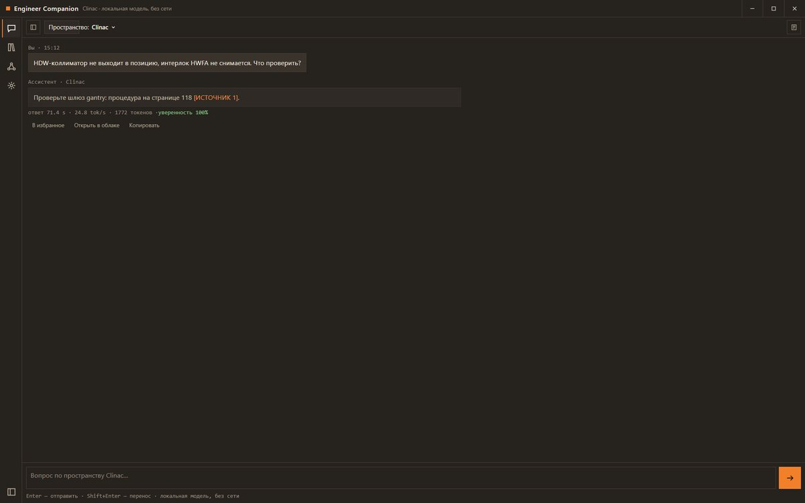
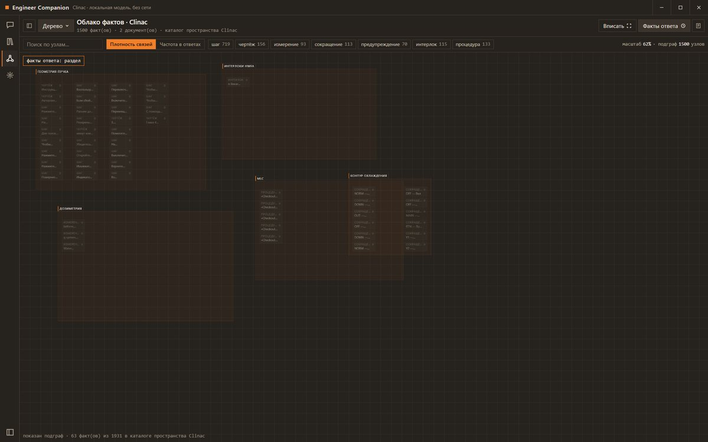
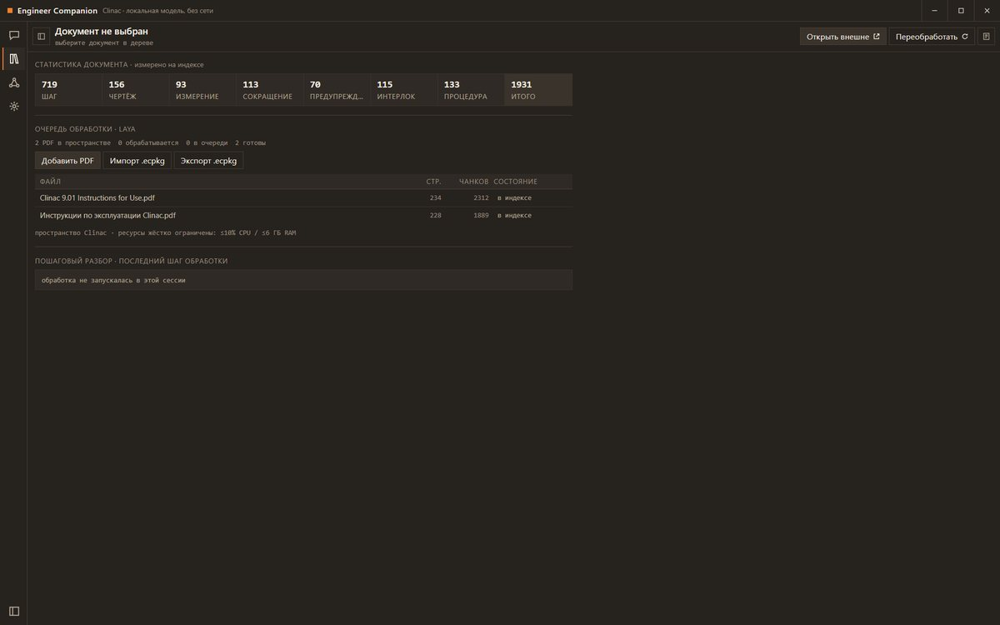

CASE 02 / picard
Engineer Companion
Полностью локальный гибридный поиск с проверяемыми ссылками на источник: документ, страница, область чертежа. Работает на CPU.
96/100бенчмарк grounded-qa-100-v1
130 msp50 латентность
21 214фактов в каталоге
768/775тестов проходят
Задача
Сервисный инженер у линейного ускорителя (Varian TrueBeam / VitalBeam) работает в бункере без интернета и должен за секунды найти точную страницу спецификации среди десятков тысяч страниц.
Подход
Полностью локальный гибридный поиск с проверяемыми ссылками на источник: документ, страница, область чертежа. Работает на CPU.
Доказательства



Стек
PythonLanceDB (вектор) + BM25 (гибрид)эмбеддинги multilingual-e5-small + реранкер mmarco cross-encoderGemma-3-4B (GGUF, llama.cpp)оболочка PySide6Android-оболочка на Compose + ONNX Runtime Mobile
Источник: README.ru.md § Engineer Companion